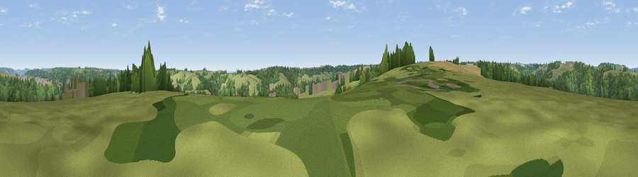

Viewpoint near Downend
#34572 in England · top 60% of its area beats it · near Downend · access?Where it is
The exact computed spot (ST 83375 98725). Click the marker for map links.
Public access: no public right of way or access land is recorded at this exact spot — it may be on private land. Computed from Natural England's CRoW access layer and OpenStreetMap rights of way — not the legal definitive map. Always verify locally.
The view, rendered

A 360° render of this exact spot computed from the terrain model, tree cover and land cover — summer colours, afternoon light, calibrated against photographs of famous viewpoints. Real trees, hedges and buildings will differ in detail.
The panorama
Grey silhouette: terrain skyline in each direction (720 bearings, Earth curvature and refraction included). Dashed green: skyline with trees (+15 m) and buildings (+8 m) as obstacles. Blue strip: how far the ground is visible on each bearing.
Where the view opens
Wedge length = distance to the farthest visible ground on that bearing (vegetation-aware). Rings at 10, 25 and 50 km.
What fills the view
47% grassland · 43% woodland · 7% cropland · 3% built-up
Angular shares of the visible panorama (visual magnitude), not map area. Landscape diversity 0.44 (0–1 Shannon).
Key numbers
More beautiful places nearby
The staircase of upgrades: each row has a higher view potential than everything closer. Driving times are estimates from straight-line distance, calibrated against real road routing — check an actual route before setting out.
| Place | Direction | Drive | Score |
|---|---|---|---|
| Viewpoint near Owlpen | W · 3 km | ~6 min | 39.5 |
| Viewpoint near Owlpen | WSW · 3 km | ~7 min | 57.9 |
| Viewpoint near Kings Stanley | NNW · 4 km | ~9 min | 68.7 |
| Viewpoint near Kings Stanley | NW · 4 km | ~9 min | 71.5 |
| Viewpoint near Selsley | N · 4 km | ~10 min | 73.5 |
| Viewpoint near Nympsfield | NW · 5 km | ~10 min | 74.9 |
| Viewpoint near Nympsfield | NW · 5 km | ~11 min | 77.5 |
| Viewpoint near Stinchcombe | W · 10 km | ~19 min | 79.4 |
51.68703, -2.24189 · source: screening · position refined by local search. Computed location — check access rights before visiting.